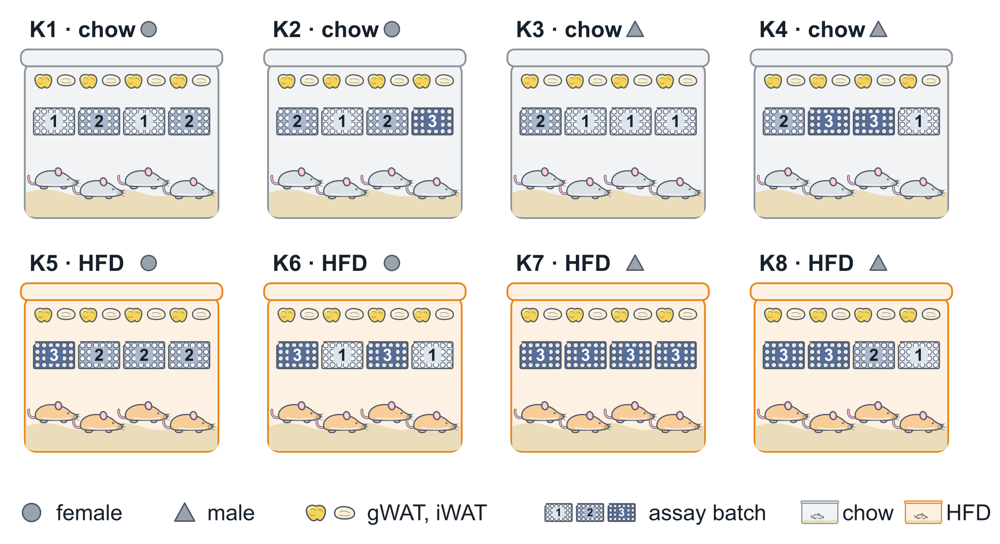

Tutorial: Interactive Exercise Page
Biostatistics workshop
Tutorial
Lecture 1 data · How the exercise pages work
TNF in gonadal white adipose tissue (gWAT) of 32 mice on chow or high-fat diet, measured in three assay batches.
Study

The data are the pilot study of Lecture 1. 32 mice were housed in 8 cages of 4 mice; cages K1 to K4 received chow and cages K5 to K8 a high-fat diet (HFD). Each cage holds mice of one sex. TNF (pg/mg) was measured in gWAT in three assay batches; the number in each tile is the assay batch of the sample. One value is below the detection limit (coded 0) and one is not measured (NA); both are left out on this page.
Each question has a panel of choices: a plot from a drop-down menu, numbers from check boxes, the groups for the numbers, and the scale. The outputs below the panel update when a selection changes. In the exercises, write down (a) the chosen plot and numbers with the reason for the choice and (b) the answer to the question. The page runs R in the browser; the first load takes some time.
Question 1: Diet Groups
1.1 How do the TNF values in gWAT differ between chow and HFD mice?
Choose plot and numbers
Answer 1.1. (a) Chosen plot and numbers, and the reason for the choice. (b) Answer to the question.
Question 2: Assay Batches
2.1 Do you find indications for batch effects?
Choose plot and numbers
Answer 2.1. (a) Chosen plot and numbers, and the reason for the choice. (b) Answer to the question.